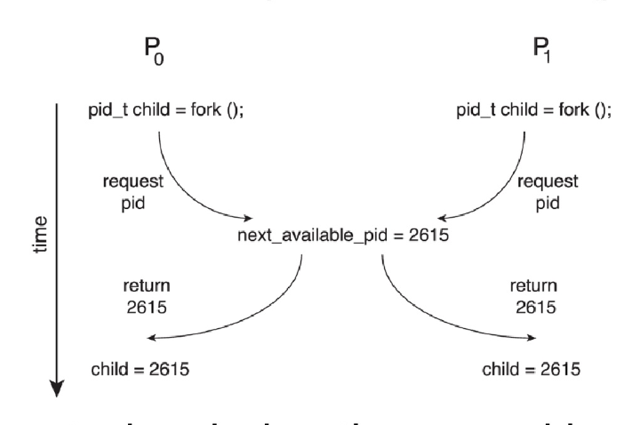
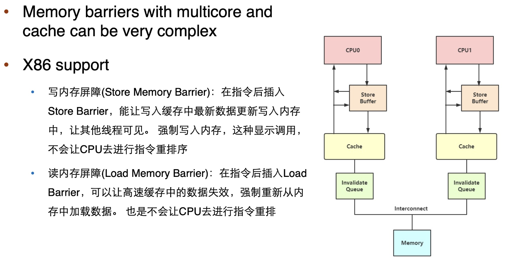
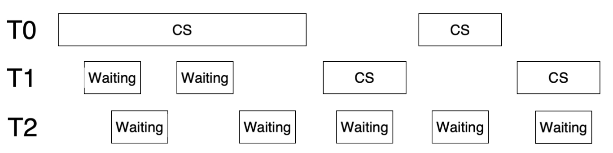
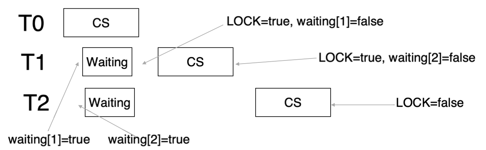
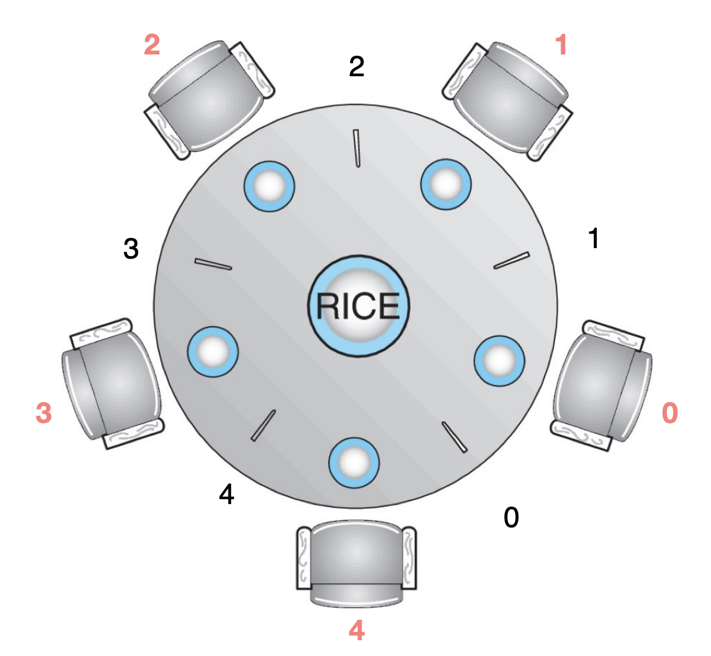

同步
Warning
C #include <stdio.h>
#include <stdlib.h>
#include <pthread.h>
int counter = 0 ;
static int loops = 1000000 ; // le6 应该是 10^6 即 1000000
/* pthread_mutex_t pmutex = PTHREAD_MUTEX_INITIALIZER; */
void * worker ( void * arg ) {
int i ;
printf ( "%s: begin \n " , ( char * ) arg );
for ( i = 0 ; i < loops ; i ++ ) {
/* pthread_mutex_lock(&pmutex); */
counter ++ ; // 问题所在
/* pthread_mutex_unlock(&pmutex); */
}
printf ( "%s: done \n " , ( char * ) arg );
return NULL ;
}
int main () {
pthread_t p1 , p2 ; // 修正变量名：pl -> p1
printf ( "main: begin (counter = %d) \n " , counter );
pthread_create ( & p1 , NULL , worker , "A" );
pthread_create ( & p2 , NULL , worker , "B" );
pthread_join ( p1 , NULL ); // 修正变量名：pl -> p1
pthread_join ( p2 , NULL );
printf ( "main: done with both (counter : %d) \n " , counter );
return 0 ;
}
Output：
Bash $ gcc sync_thread.c -lpthread
$ ./a.out
begin ( counter = 0 )
begin
begin
done
done
done with both ( counter : 1057072 )
$ ./a.out
begin ( counter = 0 )
begin
begin
done
done with both ( counter : 1031264 )
Warning
实际上预期的结果是2000000
解决方案 ：加锁（将源代码上下两行的注释去掉即可）
Race Condition
定义 ：多个进程（或线程）并发 访问和操作同一数据 ，且执行结果取决于访问发生的具体顺序
Example
进程 P0 和 P1 正在同时 使用 fork() 系统调用创建子进程
在内核变量 next_available_pid（表示下一个可用的进程标识符 pid）上存在Race Condition

Problem : 除非实现互斥访问，否则相同 的 pid 可能会被分配给两个不同的进程 ！
关键区间/临界区 （critical section）
通用结构
C while ( true ) {
// entry section
// 请求进入critical section
// critical section
// 访问共享资源的代码
// exit section
// 离开critical section
// remainder section
// 其他不涉及共享资源的代码
}
一次只能有一个进程位于critical section内 ：当一个进程在critical section 内时，其他进程不允许进入其critical section每个进程必须在entry section 请求进入critical section的许可
许可应在exit section 中释放
remainder section
OS中critical section的处理
单核系统 ：禁止中断多核系统 ：
禁止中断不可行
可抢占式 非抢占式 ：在内核模式下基本不存在Race Condition
解决方案的必要条件
Mutual Exclusion（互斥访问） ：在同一时刻，最多只有一个 线程可以执行临界区Progress（空闲让进） ：当没有线程在执行临界区代码时，必须在申请进入临界区的线程中选择一个线程，允许其执行临界区代码，保证程序执行的进展Bounded waiting（有限等待） ：当一个进程申请进入临界区后，必须在有限的时间 内获得许可并进入临界区，不能无限等待
Peterson's solution
用途 ：解决两个进程/线程的同步问题（只适用于两个进程的情况）条件
假设 LOAD 和 STORE 操作是原子的（atomic）
原子性（atomic） ：执行过程不能被中断通常，硬件不能自动保证原子性，需要使用特殊的指令
两个进程共享两个变量
boolean flag[2]：表示某个进程是否准备进入临界区int turn：表示轮到哪个进程进入临界区
Example
C // 初始化，都不进入临界区
flag [ 0 ] = FALSE ;
flag [ 1 ] = FALSE ;
/* P0 */
do {
flag [ 0 ] = TRUE ; // P0想进入临界区
turn = 1 ; // 主动让P1进入临界区
/*
* 如果：
* 1) P1 也想进入临界区（flag[1] == TRUE）
* 2) 当前轮到 P1（turn == 1）
* 那么 P0 就一直等待
*/
while ( flag [ 1 ] && turn == 1 )
;
/* critical section */
flag [ 0 ] = FALSE ; // 离开临界区
/* remainder section */
} while ( TRUE );
/* P1 */
do {
flag [ 1 ] = TRUE ; // P1想进入临界区
turn = 0 ; // 主动让P0进入临界区
while ( flag [ 0 ] && turn == 0 )
;
/* critical section */
flag [ 1 ] = FALSE ;
/* remainder section */
} while ( TRUE );
Warning
Peterson 算法并不保证在现代架构上有效，缺点如下
只适用于两个进程 的情况
假设 LOAD 和 STORE 操作是原子性的
对指令重排 的情况不正确
为了提高性能，处理器和/或编译器可能会重新排序 没有依赖关系的操作
对于单线程，这样做是可以的，因为结果总是相同的
对于多线程，重排可能会导致不一致或意外的结果
指令重排
C // 两个线程共享
boolean flag = false ;
int x = 0 ;
// 线程 1 执行
while ( ! flag ) ;
print x ;
// 线程 2 执行
x = 100 ;
flag = true ;
预期输出 ：100
问题 ：但是线程 2 的操作可能会被重新排序：
如果发生这种情况，输出可能是 0
硬件支持同步
许多系统提供硬件支持临界区代码的同步
问题所在
单处理器（Uniprocessors）：禁用中断，当前执行的代码不会被强占
但是在多处理器系统上通常效率太低
需要禁用所有中断
其他核心仍然可以访问临界区
使用这种方式的操作系统不可扩展
解决方案
内存屏障 （Memory barriers）硬件指令 （Hardware instructions）
test-and-set：测试内存字并设置值
compare-and-swap：比较并交换两个内存字的内容
原子变量 （Atomic variables）
Memory barriers
内存模型 是计算机架构向应用程序提供的内存保证
内存模型种类
强排序 （Strongly ordered）：一个处理器的内存修改会立即 对所有其他处理器可见弱排序 （Weakly ordered）：一个处理器的内存修改可能不会 立即对所有其他处理器可见
内存屏障（Memory barrier） 是一个指令，它强制 任何内存中的更改传播（使其对所有其他处理器可见）
Example
通过添加内存屏障来确保线程 1 输出 100
C // 线程 1 执行
while ( ! flag ) ;
memory_barrier ();
// 通过在读取 x 之前加入内存屏障，确保在读取 x 的值之前，flag 的修改已经完成
print x ;
// 线程 2 执行
x = 100 ;
memory_barrier ();
// 在设置 flag 为 true 之前，内存屏障确保 x 的新值已经对其他处理器可见
flag = true ;
x86

Hardware instructions
定义 ：一些特殊的硬件指令，允许我们原子地 （不可中断地）对一个字中的内容进行测试并修改，或者原子地 交换两个字的内容
Test-and-set
定义 如下，以原子 方式执行，设置并返回旧值
C bool test_set ( bool * target ){
bool rv = * target ;
* target = TRUE ;
return rv ;
}
使用 Test-and-Set 实现锁
C bool lock = FALSE
do {
while ( test_set ( & lock )); // 忙等待
critical section
lock = FALSE ;
remainder section
} while ( TRUE );
FALSE：锁空闲TRUE：锁已被占用第一个成功执行 test_set 的进程：看到旧值 FALSE，把锁设为 TRUE，循环结束，进入临界区
其他进程：看到旧值 TRUE，继续循环等待
三大性质
mutual exclusion：满足，test_set 是原子操作，同一时刻只能有一个进程把 lock 从 FALSE 改成 TRUE
progress：满足，只要临界区空闲（lock = FALSE），想进入的进程一定能通过 test_set 竞争到锁
bounded-waiting：不满足 ！！！！！
Example
假设有三个线程

改进
C do {
waiting [ i ] = true ; // 表示进程 i 想进入临界区，加入等待队列
while ( waiting [ i ] && test_and_set ( & lock )) ; // 若还在等待且锁已被占用true，则自旋
waiting [ i ] = false ; // 成功获得锁，退出等待状态
/* critical section */
// 从下一个进程开始，寻找仍在等待的进程
j = ( i + 1 ) % n ;
while (( j != i ) && ! waiting [ j ])
j = ( j + 1 ) % n ;
if ( j == i )
lock = false ; // 没有其他进程在等待，释放锁
else
waiting [ j ] = false ; // 将锁“直接交给”下一个等待的进程（不释放 lock）
/* remainder section */
} while ( true );

Compare-and-swap
定义
C int compare_and_swap ( int * value , int expected , int new_value ){
int temp = * value ;
if ( * value == expected )
* value = new_value ;
return temp ;
}
以原子方式 执行
返回传入参数 *value 的原始值
仅当 *value == expected 为真时，才会发生交换
实现锁 ：共享整型锁 lock，初始值为 0
C while ( true )
{
while ( compare_and_swap ( & lock , 0 , 1 ) != 0 ) // lock == 0 时跳出循环，得到锁
; /* do nothing */
/* critical section */
lock = 0 ;
/* remainder section */
}
Atomic variables
定义
通常，硬件指令会被用作构建其他同步工具 的基础模块
其中一种工具是原子变量 ，它能够对基本数据类型（如整数和布尔值）提供原子性的更新
Example
对原子变量 sequence 执行 increment() 操作，可以保证 sequence 的递增过程不会被中断
C void increment ( atomic_int * v ) {
int temp ;
do {
temp = * v ;
} while ( temp != ( compare_and_swap ( v , temp , temp + 1 )));
// 如果 v 的值为 temp，则将其更新为 temp + 1
// 如果值没有被更新（即存在竞争条件），则继续循环直到成功
}
Mutex Locks
互斥锁 ：通过先获取锁 acquire()，再释放锁 release() 来保护临界区
布尔变量 指示锁是否可用acquire() 和 release() 调用必须是原子性的 ：通常通过硬件原子指令实现 e.g. compare-and-swap
C bool locked = false ;
acquire () {
while ( compare_and_swap ( & locked , false , true ))
; // 忙等待
}
release () {
locked = false ;
}
while ( true ) {
acquire lock // 获取锁
critical section // 临界区
release lock // 释放锁
remainder section // 其余部分
}
相关定义
忙等待 是指在等待锁的过程中，线程/进程不停地进行检查 锁是否可用忙等待时间 ：从acquire到释放锁release之间的时间自旋锁（spinlock） ：通过忙等待 来获取锁，直到锁可用，是一个特定的互斥锁实现方式
Warning
过多的自旋 ：单个处理器上的两个线程
T0 获取锁，进入临界区
T1 在 T0 释放锁之前，使用其所有 CPU 时间进行忙等待 ，导致消耗了所有的 CPU 时间，但是并没有实际的计算进展
由于 T1 不断自旋而无法释放 CPU 时间，导致 T0 虽然持有锁，但是无法继续执行其任务，两者的竞争导致了 CPU 资源的浪费
改进
减少忙等待 ：让线程挂起（yield），从运行状态转到睡眠状态
C void init () {
flag = 0 ;
}
void lock () {
while ( test_set ( & flag , 1 ) == 1 )
yield (); // 让出 CPU
}
void unlock () {
flag = 0 ;
}
实现 ：semaphore
添加一个队列
当锁被占用时，改变进程状态为 SLEEP，然后将其添加到队列中，并调用 schedule()
semaphore
信号量 ：一种同步工具，它提供了比互斥锁更复杂的方式来同步进程的活动
包含一个整数变量 S
只能通过两个不可分割（原子）操作 wait() 和 signal() 来访问
C wait ( S ) {
while ( S <= 0 ) ; // 忙等待
S -- ;
}
signal ( S ) {
S ++ ;
}
类型
Counting semaphore ：信号量的整数值可以在一个无限制的范围内 变化Binary semaphore ：信号量的整数值只能在 0 和 1 之间 变化（和互斥锁相同）
Example
C sem = 0 ; // binary semaphore
P1 :
S1 ; // P1 执行操作 S1
signal ( sem ); // P1 完成操作后，发出信号，sem = 1
P2 :
wait ( sem ); // P2 等待 sem 的值变为正（即 P1 已完成，sem = 1）
S2 ; // P2 执行操作 S2
带等待队列的信号量
数据结构
C typedef struct {
int value ; // 信号量的值
struct list_head * waiting_queue ; // 等待队列
} semaphore ;
两个操作
block：将调用该操作的进程放入适当的等待队列 中wakeup：从等待队列中移除 一个进程，并将其放入就绪队列中
实现
C wait ( semaphore * S ) {
S -> value -- ; // 信号量减1
if ( S -> value < 0 ) {
// 如果信号量小于0，表示没有可用资源，需要等待
// 将该进程加入到等待队列
add this process to S -> list ;
block (); // 阻塞当前进程，直到它从等待队列中被唤醒
}
}
signal ( semaphore * S ) {
S -> value ++ ; // 信号量加1
if ( S -> value <= 0 ) {
// 如果信号量小于等于0，，表示仍有进程在等待资源
// 从等待队列移除一个进程
remove a proc . P from S -> list ;
wakeup ( P ); // 唤醒该进程，让它继续执行
}
}
Semaphore sem ; // 初始化为 1，表示一个资源可用
do {
wait ( sem );
critical section // 临界区
signal ( sem );
remainder section // 其余部分
} while ( TRUE ); // while 循环，但不进行忙等待
互斥锁 vs 信号量
互斥锁或自旋锁 （Mutex or Spinlock）
优点 ：没有阻塞，不需要操作系统切换上下文缺点 ：在循环等待时浪费 CPU 时间适合 于：短的临界区
信号量 （Semaphore）
优点 ：没有循环等待，可以节省大量的 CPU 时间缺点 ：上下文切换耗时（将一个进程从运行状态切换到休眠状态，然后再切换回来）适合 于：长的临界区
原子性
真实实现中，wait 或 signal 操作应该是原子性的 ，需要用 spinlock 来实现
临界区没有忙等待 ，可以节省大量的 CPU 时间仍然存在在 wait 和 signal 操作中的忙等待
C Semaphore sem ; // 初始化为 1
do {
wait ( sem ); // busy waiting
critical section // no busy waiting
signal ( sem ); // busy waiting
remainder section
} while ( TRUE ); // while 循环，但不进行忙等待
真正实现
C typedef struct __lock_t {
int flag ; // value：用于标记锁的状态，0 表示没有被占用，1 表示已被占用
int guard ; // spinlock的保护变量
queue_t * q ; // 等待队列，存放等待锁的进程
} lock_t ;
// 初始化
void lock_init ( lock_t * m ) {
m -> flag = 0 ; // 锁没有被占用
m -> guard = 0 ;
queue_init ( m -> q );
}
// wait
void lock ( lock_t * m ) {
/* start：保护 m->flag 的 spinlock */
while ( TestAndSet ( & m -> guard , 1 ) == 1 ); // 获取自旋锁，如果 m->guard = 0， m->guard 被设置为1，成功获取
if ( m -> flag == 0 ) { // 锁没有被占用
m -> flag = 1 ; // 锁被成功获取
m -> guard = 0 ; // 释放自旋锁
/* end 1 */
} else {
queue_add ( m -> q , gettid ()); // 锁被占用，将当前进程加入等待队列
m -> guard = 0 ; // 释放自旋锁
// 如果不释放自旋锁就进入休眠状态，则其他进程无法获取自旋锁，从而浪费 CPU 时间
/* end 2 */
park (); // block()/schedule()
}
}
// signal
void unlock ( lock_t * m ) {
/* start：保护 m->flag 的 spinlock */
while ( TestAndSet ( & m -> guard , 1 ) == 1 );
if ( queue_empty ( m -> q )) // 如果等待队列为空
m -> flag = 0 ; // 锁被成功释放
else
unpark ( queue_remove ( m -> q )); // 从等待队列移除一个进程并唤醒它
m -> guard = 0 ;
/* end */
}
死锁与饥饿
死锁 （Deadlock）：两个或多个进程无限期地 等待一个事件，而该事件只能由其中一个等待的进程触发
Example
C // S 和 Q 是两个初始化为 1 的信号量
P0 : P1 :
wait ( S ); wait ( Q );
wait ( Q ); wait ( S );
... ...
signal ( S ); signal ( Q );
signal ( Q ); signal ( S );
假设 P0 在 wait(S) 时被阻塞
P1 在 wait(Q) 之后执行 wait(S)，但是 S 被 P0 占用，P1 无法继续执行
P0 继续执行 wait(Q)，但是 Q 被 P1 占用，P0 无法继续执行
在这种情况下，P0 和 P1 都在等待对方释放资源，形成了死锁
饥饿 （Starvation）：进程被无限期阻塞，永远不会从信号量的等待队列中被移除
优先级反转
优先级反转 （Priority Inversion）：一个高优先级进程被低优先级任务间接抢占
低优先级任务持有锁，但由于它的优先级较低，因此无法获得 CPU 时间 ，最终无法释放锁
高优先级任务会一直等待锁
Example
假设有三个进程 PL、PM 和 PH，优先级关系为 PL<PM<PH
PL 持有一个锁，PH 请求这个锁，因此 PH 被阻塞，无法继续执行
PM 是中优先级的进程，在 PL 持有锁时，PM 变为就绪状态，并且它的优先级高于 PL，因此会抢占 PL，使 PL 无法继续执行并且释放锁
PH 需要锁，但由于 PL 被 PM 中断，PH 一直无法继续执行
相当于反转了 PH 和 PM 的优先级关系
解决方案 ：优先级继承（Priority Inheritance）
将等待进程（PH）的最高优先级临时分配 给持有锁的进程（PL）
PL 会尽快完成它的任务并释放锁，PH 就可以获得锁并继续执行
当 PL 释放锁后，它的优先级会恢复 为原始的低优先级
Linux
2.6 以前的版本的 kernel 中通过禁用中断来实现一些短的 critical section；2.6 及之后的版本的 kernel 是抢占式的
Linux 提供的同步机制 ：
原子整数（atomic integers）
自旋锁（spinlocks）
信号量（semaphores）：
在单处理器系统上，自旋锁通过启用/禁用内核抢占来替代
down() 和 up()
读写锁（reader-writer locks）
用于user space 的同步机制 常见的 POSIX 同步机制
互斥锁（mutex locks）
信号量（semaphores）
条件变量（condition variable）
互斥锁
C #include <pthread.h>
pthread_mutex_t mutex ;
/* 创建并初始化互斥锁 */
pthread_mutex_init ( & mutex , NULL );
/* 获取互斥锁 */
pthread_mutex_lock ( & mutex );
/* 临界区 */
/* 释放互斥锁 */
pthread_mutex_unlock ( & mutex );
信号量
条件变量 ：允许线程等待某个特定的条件发生，才能继续执行
while 检查不是原子操作时，可以使用条件变量
不能支持多线程 条件变量是用户模式对象，不能在进程间共享
Example
C void * thread_func ( void * args ) {
while ( x != 10 ) {
sleep ( 5 ); // 每次检查不到条件时，线程会休眠
}
// 条件成立后，执行后续的代码
}
操作
wait(condition, lock)：释放锁并让线程等待，直到条件成立；线程被唤醒后，需要重新获取锁signal(condition, lock)：如果有线程在等待条件成立，唤醒一个线程broadcast(condition, lock)：与 signal() 类似，但唤醒所有等待线程
POSIX 条件变量
POSIX 条件变量与 POSIX 互斥锁关联，以提供互斥（保证操作的原子性）
C // 创建和初始化条件变量
pthread_mutex_t mutex ;
pthread_cond_t cond_var ;
pthread_mutex_init ( & mutex , NULL );
pthread_cond_init ( & cond_var , NULL );
// 线程等待条件：a == b 为 true
pthread_mutex_lock ( & mutex );
while ( a != b )
pthread_cond_wait ( & cond_var , & mutex ); // 释放锁并等待条件
pthread_mutex_unlock ( & mutex );
// 线程发出信号，唤醒另一个线程
pthread_mutex_lock ( & mutex );
/* 执行可能满足条件的操作 */
pthread_mutex_unlock ( & mutex );
pthread_cond_signal ( & cond_var ); // 唤醒线程 1
信号量 vs 条件变量
条件变量可以唤醒所有等待条件的线程，适用于多个线程等待相同条件的情况（只关心队列是否为空，而不关心队列的长度）
信号量通常只唤醒一个线程，它适用于较少的线程间同步情况
经典同步问题
有界缓冲区问题
有界缓冲区问题 （Bounded-Buffer Problem）：也称为生产者-消费者问题（producer-consumer problem）
两个进程 ：生产者（producer）和消费者（consumer）共享 n 个缓冲区
生产者 生成数据，并把数据放入缓冲区消费者 通过从缓冲区取出数据来消费数据
保证 ：
当缓冲区已满 时，生产者不会尝试往缓冲区继续放数据
当缓冲区为空 时，消费者不会尝试从缓冲区取数据
解决方案
n 个缓冲区，每个缓冲区只能容纳 1 个数据项信号量 mutex 初始化为 1
信号量 full-slots 初始化为 0
信号量 empty-slots 初始化为 N
生产者进程
C do {
// produce an item // 生产一个数据项
...
wait ( empty - slots ); // 等待“空槽位”>0：防止缓冲区满了还写入
wait ( mutex ); // 获取互斥锁：进入临界区，独占访问缓冲区
// add the item to the buffer// 把数据项放入缓冲区（对共享缓冲区的写操作）
...
signal ( mutex ); // 释放互斥锁：退出临界区
signal ( full - slots ); // 满槽位+1：通知消费者“现在有数据可取了”
} while ( TRUE );
消费者进程
C do {
wait ( full - slots ); // 等待“满槽位”>0：防止从空缓冲区读取
wait ( mutex ); // 获取互斥锁：进入临界区，独占访问缓冲区
// remove an item from buffer// 从缓冲区取出一个数据项（对共享缓冲区的读/删操作）
...
signal ( mutex ); // 释放互斥锁：退出临界区
signal ( empty - slots ); // 空槽位+1：通知生产者“现在有空位可写了”
// consume the item // 消费/处理该数据项（不需要在临界区内做）
...
} while ( TRUE );
读者-写者 问题
条件 ：一个数据集被多个并发进程共享
读者 （readers）：只读取数据集，不进行任何更新操作写者 （writers）：既可以读取 数据，也可以写入数据
读者-写者问题 （readers-writers problem）
允许多个读者 同时读取数据（共享访问）任意时刻只允许一个写者访问 共享数据（独占访问）
解决方案
信号量 mutex 初始化为 1
信号量 write 初始化为 1
整型变量 readcount 初始化为 0
写者进程
C do {
wait ( write ); // 请求写锁，确保对共享数据的独占访问
// 若有读者或其他写者在访问，则在此阻塞
...
// write the shared data // 写共享数据（写操作必须独占）
...
signal ( write ); // 释放写锁，允许读者或其他写者进入
} while ( TRUE );
读者进程
C do {
wait ( mutex ); // 进入临界区，保护 readcount（防止多个读者同时修改）
readcount ++ ; // 当前读者数量 +1
if ( readcount == 1 ) // 如果是第一个进入的读者
wait ( write ); // 获取写锁，阻止写者进入临界区
signal ( mutex ); // 离开临界区，允许其他读者修改 readcount
...
// reading data // 读共享数据（允许多个读者同时进行）
...
wait ( mutex ); // 再次进入临界区，准备更新 readcount
readcount -- ; // 当前读者数量 -1
if ( readcount == 0 ) // 如果这是最后一个离开的读者
signal ( write ); // 释放写锁，允许写者进入
signal ( mutex ); // 离开临界区
} while ( TRUE );
问题变种 （不同的优先策略）
读者优先 （Reader first）：前边的代码所实现
只要写者没有正在更新数据，就不会让读者等待
如果已有读者在访问数据，新来的读者可以直接继续读取
写者可能发生饥饿
写者优先 （Writer first）
一旦写者准备好写数据，就应尽快执行写操作
如果已有读者在访问数据，新来的读者将等待被挂起的写者
哲学家进餐问题
哲学家进餐问题 （Dining-Philosophers Problem）：一种多资源同步问题
哲学家围坐在一张圆桌旁，但彼此之间不直接交互
每两个相邻的哲学家之间放置一根筷子
进餐需要同时拿到两根筷子，进餐结束后释放两根筷子
解决方案 （假设有5位哲学家）

信号量 chopstick[5] 初始化为 1
第i个哲学家
C // 哲学家i（总共5个），每根筷子用一个信号量 chopstick[k] 表示（初值 1）
do {
wait ( chopstick [ i ]); // 拿起左边筷子（对第 i 根筷子加锁）
wait ( chopstick [( i + 1 ) % 5 ]); // 再拿起右边筷子（对相邻那根筷子加锁）
eat ; // 同时拿到两根筷子后才能吃
signal ( chopstick [ i ]); // 放下左边筷子（释放资源）
signal ( chopstick [( i + 1 ) % 5 ]); // 放下右边筷子（释放资源）
think ; // 思考
} while ( TRUE );
Warning
问题 ：死锁（deadlock）
原因 ：如果5个哲学家同时先拿左筷子，每个人都在等右筷子，而右筷子被别人拿着，形成循环等待
在实际代码中的哲学家进餐问题
每个哲学家线程先随机思考一段时间
想吃饭时调用 pickup() 去拿筷子
吃完后调用 putdown() 放下筷子
偶数哲学家先拿左筷子，奇数哲学家先拿右筷子
code
C void * philosopher ( void * v ){
Phil_struct * ps ; // 哲学家对应的数据结构（包含编号、共享资源等）
int st ; // 状态/计时等（具体含义看结构体定义）
int t ; // 时间/随机数等（具体含义看结构体定义）
ps = ( Phil_struct * ) v ; // 取出线程参数
while ( 1 ) {
/* 先思考随机秒数 */
...
/* 醒来后想吃饭：调用 pickup 去拿筷子（拿资源） */
...
pickup ( ps ); // 尝试获取两根筷子（这里如果策略不当会死锁/饥饿）
/* pickup 返回后说明已经拿到筷子，可以吃一段时间 */
...
/* 吃完后调用 putdown 放下筷子（释放资源） */
...
putdown ( ps ); // 释放两根筷子，唤醒其他等待者
}
}
2026年3月1日 17:03:13
2025年12月19日 12:28:00